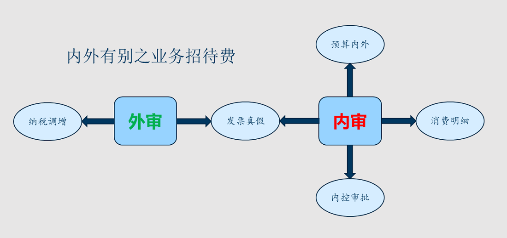

案例分享 > 案例详情
内审外审之业务招待费
内审与外审
同样一个东西，从外部看和从内部看是两个不同的角度。
外审，流于形式，千篇一律的多。
内审，没有固定形式，老板私人定制。
内审做些什么取决于老板最关心什么。
外审，流于形式，千篇一律的多。
内审，没有固定形式，老板私人定制。
内审做些什么取决于老板最关心什么。

外审关注视角:
a.发票真假;b.纳税调增。
内审关注视角:
a.发票真假；
b.预算内外，此笔招待费是不是预算内费用？超标的预算外费用，没有充足的理由一般都不与报销，自己买单；
c.消费明细，烟酒茶、礼品、滋补品、会所等奢侈性消费都会被查处；
d.内控审批，内控流程是否有事前申请及事后审批?审批权限，比如5万以内总经理签字审批，5万以上董事长签字审批。 招待事由，偶尔编个冠冕堂皇的理由不难，难的是一直滴水不漏！招待标准，不能是会所豪华酒店。送了什么礼品？单价超不超标准？礼品送谁了？有没有行贿?申请单上要注明招待谁?作陪的有谁？招待和被招待的人数比例，不能10个人招待1个人吧?
业务招待费这么深入管理了之后，公司报销业务招待费的大幅减少，谁都不愿意自己的名字在招待费申请单上。通过内审把关，大家的意识提高了，公司招待费减少了，公款消费的违规风险也降低了，这就是内审创造的价值。
企业内审或者外包内审在审计时只吃工作餐，处处体现职业素养，这是职业病，不好治呢。
b.预算内外，此笔招待费是不是预算内费用？超标的预算外费用，没有充足的理由一般都不与报销，自己买单；
c.消费明细，烟酒茶、礼品、滋补品、会所等奢侈性消费都会被查处；
d.内控审批，内控流程是否有事前申请及事后审批?审批权限，比如5万以内总经理签字审批，5万以上董事长签字审批。 招待事由，偶尔编个冠冕堂皇的理由不难，难的是一直滴水不漏！招待标准，不能是会所豪华酒店。送了什么礼品？单价超不超标准？礼品送谁了？有没有行贿?申请单上要注明招待谁?作陪的有谁？招待和被招待的人数比例，不能10个人招待1个人吧?
业务招待费这么深入管理了之后，公司报销业务招待费的大幅减少，谁都不愿意自己的名字在招待费申请单上。通过内审把关，大家的意识提高了，公司招待费减少了，公款消费的违规风险也降低了，这就是内审创造的价值。
企业内审或者外包内审在审计时只吃工作餐，处处体现职业素养，这是职业病，不好治呢。